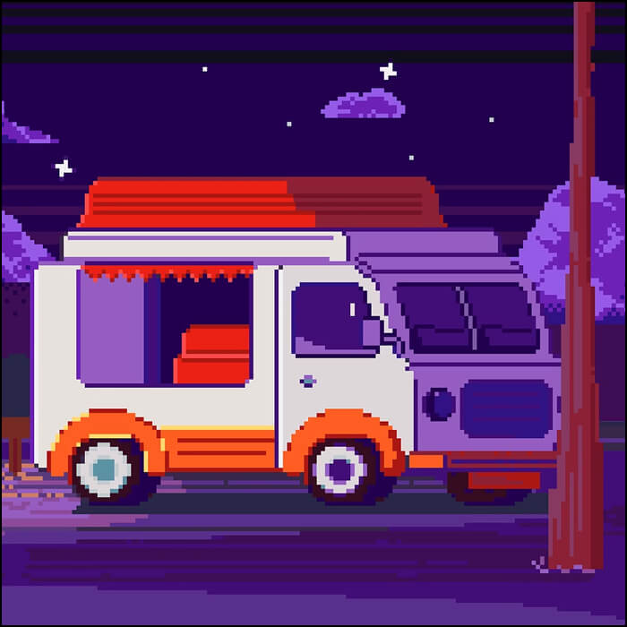

Фритрек и нулевой спринт: Подготовка к работе
<anticipation>

Это было самое начало пути. На этом этапе важно было проникнуться основами и настроиться на учёбу. И, возможно, подумать, как новые знания могут повлиять на ваше будущее.
Был в предвкушении новых знаний, но вместе с этим понимал, что будет скучно, т.к. многое уже знал.